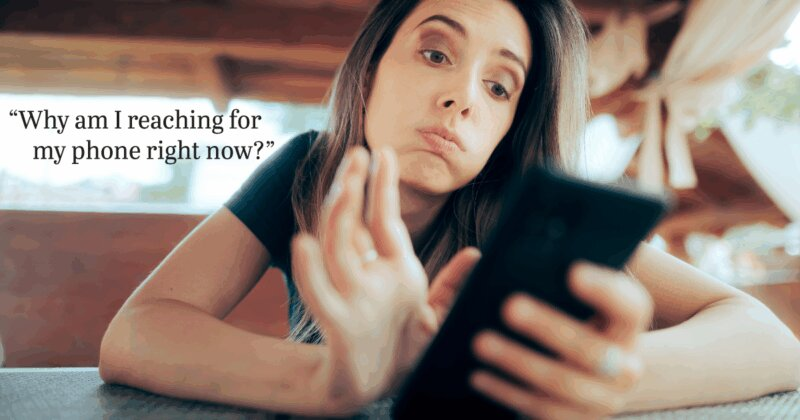

Gen Z Doomscrolling

Source: https://organicconsumers.org/the-1-trick-gen-z-is-using-to-escape-doomscrolling-by-a-psychologist/
Gen Z often experiences "doomscrolling" the act of endlessly consuming negative news and social media content, often without realizing how much time has passed. With constant updates from platforms like TikTok, Instagram, and X, they are exposed to a nonstop stream of distressing information, ranging from global crises to personal struggles shared online. This habit can be difficult to break, as the content is designed to keep users engaged and continuously scrolling.
Their social lives and self-identities are deeply intertwined with their online presence, making social media not just a tool for communication but also a key part of how they express themselves and connect with others. Because of this, stepping away from these platforms can feel like being disconnected from both friends and important world events. As a result, it becomes nearly impossible for many to fully disconnect from global issues, reinforcing the cycle of doomscrolling and constant digital engagement.
Another consequence of doomscrolling is its impact on mental health and emotional well-being. Constant exposure to negative or distressing content can heighten feelings of anxiety, helplessness, and even desensitization over time. Instead of staying informed in a balanced way, individuals may feel overwhelmed by the sheer volume of information, leading to mental fatigue. This can disrupt sleep patterns, reduce productivity, and make it harder to focus on everyday tasks, as the mind remains preoccupied with the issues encountered online.
Despite these challenges, many members of Gen Z are becoming more aware of the effects of doomscrolling and are actively seeking ways to manage their digital habits. Practices such as setting screen time limits, curating more positive or educational content, and taking intentional breaks from social media are becoming more common. Some also turn to mindfulness techniques or offline activities to regain a sense of control and balance. These efforts reflect a growing recognition that while staying informed is important, maintaining mental well-being is equally essential in navigating an increasingly connected digital world.
Effects of Doomscrolling:
- Negativity Bias: Algorithms prioritize alarming content, causing constant anxiety.
- The Sleep Thief: Late-night scrolling ruins sleep and degrades mental health.
- Comparison Culture: Seeing "perfect" lives online fuels a sense of personal inadequacy.
- Information Overload: Constant exposure to endless content can overwhelm the brain, making it harder to process information and increasing stress levels.
- Emotional Desensitization: Repeated exposure to intense or shocking content can dull emotional responses, making real-life situations feel less impactful.
References
- ImPossible Psychological Services. (2026, January 27). How to reduce the negative effects of screen time on Gen Alpha. Retrieved from https://www.impossiblepsychservices.com.sg/our-resources/articles/2026/01/27/how-to-reduce-the-negative-effects-of-screen-time-on-gen-alpha/